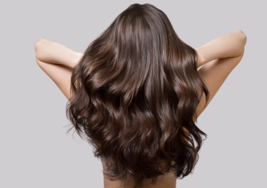

El cuidado del cabello es fundamental para mantenerlo fuerte, brillante y saludable. Muchas personas no le dan la importancia necesaria, pero el cabello también refleja nuestro estado de salud y bienestar.
Un buen cuidado capilar ayuda a prevenir problemas como la caída excesiva, la resequedad, la caspa y las puntas abiertas. Además, mejora la apariencia y la autoestima.
Existen varios factores que pueden dañar el cabello si no se cuida adecuadamente:

Cuidar tu cabello no solo mejora tu apariencia, sino también tu salud capilar. Con una buena rutina, productos adecuados y una alimentación balanceada, puedes lograr un cabello sano, fuerte y hermoso.